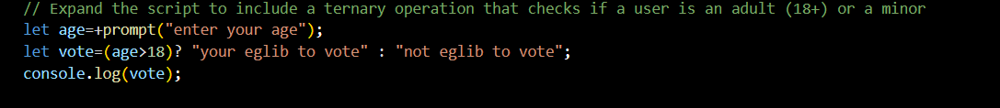
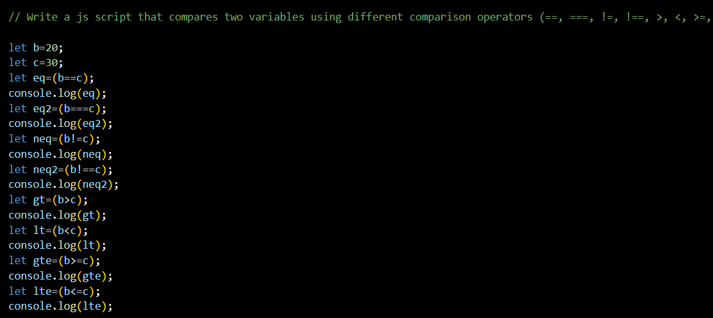
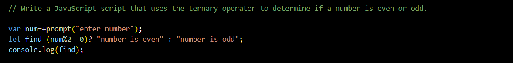
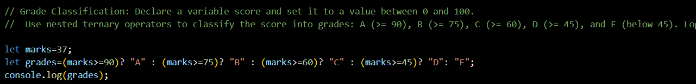
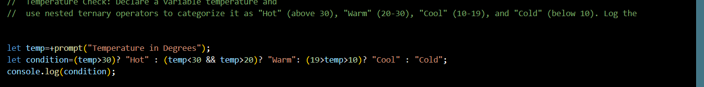
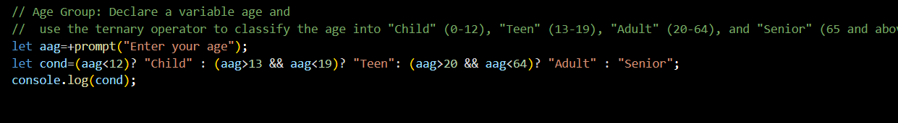

1. Expand the script to include a ternary operation that checks if a user is an adult (18+) or a minor

2. Write a js script that compares two variables using different comparison operators (==, ===, !=, !==, >, ≮, >=, ≯=) and prints the results.

3. Write a JavaScript script that uses the ternary operator to determine if a number is even or odd.

4. Grade Classification: Declare a variable score and set it to a value between 0 and 100.
Use nested ternary operators to classify the score into grades: A (>= 90), B (>= 75), C (>= 60), D (>= 45), and F (below 45). Log the grade.

5. Temperature Check: Declare a variable temperature and use nested ternary operators to categorize
it as "Hot" (above 30), "Warm" (20-30), "Cool" (10-19), and "Cold" (below 10). Log the result.

6. Age Group: Declare a variable age and use the ternary operator to classify the age
into "Child" (0-12), "Teen" (13-19), "Adult" (20-64), and "Senior" (65 and above). Log the result.
